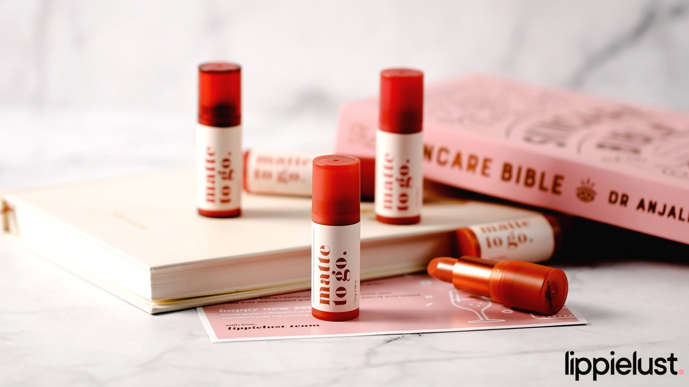
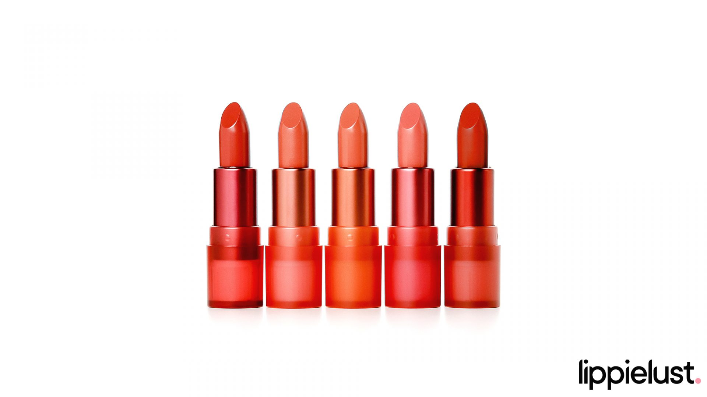

[Swatches + Review] I’m Meme Matte To Go & Bare Lips Color Balm
I’M MEME Matte To Go Lipstick

Nama Produk: I’M MEME Matte To Go
Produsen / Distributor: MBX Corp
Berat Bersih: 2.3 gr
Jumlah Warna: 5 warna
Harga: Rp180.000
Pembelian Official I’M MEME Stores at Shopee, Tokopedia
I’m Meme Matte To Go merupakan produk lipstik klasik dari I’m Meme yang menjadi favorit pecinta lipstik, apalagi untuk yang lebih memilih matte lipstick batang daripada cair. Formulanya creamy dengan tekstur terasa powdery di bibir, lipstik ini sangat mudah diaplikasikan dari kali pertama lipstik dibuka.
Sejak awal aku coba produk-produknya I’M Meme, aku selalu merasa puas dengan variasi warna yang ditawarkannya. I’m not a fan of bright cool-tone colors, dan aku ngerasa gak pernah cocok jika pakai lipstik-lipstik Korea karena hal ini. Berbeda dengan I’M Meme, warna-warna untuk produk dekoratif bibirnya menurutku sangat warm-tone lovers friendly. Matte To Go juga memiliki mayoritas varian pilihan warna yang hangat bernuansa coklat yang aku rasa akan cocok di para pecinta warna-warna warm untuk lipstik, juga beberapa pilihan warna cool–tone untuk yang lebih suka lipstik-lipstik bernuansa dingin.
Karena pigmentasinya yang sangat tinggi, kamu bisa dapatkan coverage hanya dalam 1x aplikasi. Daya tahannya bisa sampai maksimal 7 jam dengan catatan warna akan berangsur-angsur luntur seiring lamanya pemakaian.
Ada satu hal yang menjadi kekurangan dari produk yang memiliki hasil akhir silky matte ini: rentan patah. Produk ini memiliki berat bersih 2,3gr dan dikemas dalam container yang berukuran lebih besar dibandingkan lipstik didalamnya. Maka dari itu aku rasa ketidakseimbangan ukuran lipstik dan wadah menjadi salah satu faktor mengapa produk ini rentan patah.
Shades

#001 Automatic – brick rose MLBB (refined and sensuous rose hue that leaves a slightly blurred effect like an image filter)
#002 My Bias – coral brown MLBB (versatile shade that complements all undertones
#003 Curiously – nude brown MLBB (lively nude beige)
#004 Double Doubt – rosy brown MLBB (elegant sun-dried rose)
#005 Eek – chili MLBB (dark and dramatic red)
Packaging
I’m Matte To Go memiliki box dengan gambar bibir yang sesuai dengan setiap shade. Terdapat informasi nama shade dan daftar kandungan, sama seperti box I’m Meme pada koleksi yang lain. Untuk botolnya sendiri terbuat dari plastik yang ringan, kecil, dan disesuaikan dengan warna lip matte. Ada juga segel berwarna hitam bertuliskan bahasa Korea, dengan ini menandakan bahwa produk masih baru.
Ingredients
Dimethicone, Bis-Diglyceryl Polyacyladipate-2, Isotridecyl Isononanoate, Synthetic Fluorphlogopite, Polyglyceryl-2 Triisostearate, Silica, Hydrogenated Polyisobutene, Microcrystalline Wax, Euphorbia Cerifera (Candelilla) Wax, Phenyl Trimethicone, Dimethicone Crosspolymer, Titanium Dioxide (CI 77891), Polyethylene, Tricalcium Phosphate, Iron Oxides (CI 77491), Ceresin, Palmitoyl Proline, VP/Hexadecene Copolymer, Octocrylene, Iron Oxides (CI 77499), Diisostearyl Malate, Magnesium Palmitoyl Glutamate, Sodium Palmitoyl Sarcosinate, Fragrance, Triethoxycaprylylsilane, BHT, Tocopherol, Yellow 5 (CI 19140), Aluminum Hydroxide, Red 7 Lake (CI 15850), Red 7 (CI 15850:1), Red 28 (CI 45410), Iron Oxides (CI 77492)